Voir exemple : Les Déversoirs d'orage à ouverture de radier
Cet ouvrage est conçu pour que, jusqu’au débit limite (débit de référence), le débit arrivant par la canalisation amont passe totalement dans le collecteur de départ par une ouverture pratiquée dans le radier (avec ou sans décrochement).
Le fonctionnement est schématisé sur la figure suivante :
avec :
A : Arrivée de l’eau dans la conduite amont d’arrivée.
B : Chute de l’eau conservée dans une chambre intermédiaire, puis départ par la conduite aval de débit conservé.
C :Le débit déversé s’échappe par la conduite de décharge.
D :Aération de la chambre intermédiaire.
L’ouverture dans le radier paraît intéressante à priori, car elle permet de récupérer et d’envoyer vers la station d’épuration les eaux les plus chargées et les matières les plus lourdes qui se déplacent sur le radier des collecteurs.
Les inconvénients majeurs généralement cités sont le risque de bouchage et l’imprécision du débit limite conservé dans le collecteur de départ.
Cependant, quand on a un écoulement torrentiel dans le collecteur amont et qu’on ne peut admettre de ralentissement du flot qui créerait un ressaut, cette solution reste une des seules possibles.
L’ouverture dans le radier peut être de type rectangulaire ou parabolique.
La figure suivante est une vue de dessus qui illustre cette caractéristique.
avec :
D est le diamètre,
DL est la longueur
B est la largeur de l’ouverture de radier.
D’un point de vue pratique, cette ouverture peut être réalisée dans une plaque de tôle qu’on dispose au fond de la canalisation. On peut également installer une plaque ajustable qui présentera l’avantage de laisser la possibilité d’ajuster le débit conservé. Cela peut être utile lors de la mise en place du déversoir si les résultats obtenus ne sont pas ceux escomptés. Mais cela peut également être utile si le débit de référence venait à être modifié (adaptation à l’évolution de l’urbanisation).
Il est important de noter, du point de vue de la construction, que la chambre intermédiaire doit être aérée. Dans le cas contraire, l’écoulement dans la conduite de départ pourrait perturbé.
Comme tous les ouvrages susceptibles de se boucher, il est nécessaire de prévoir des inspections régulières et fréquentes pour assurer une maintenance convenable. Lors de la conception, il faut donc essayer de rendre l’ouvrage suffisamment accessible.
Une décharge à ouverture de radier n’est calculable hydrauliquement qu’en écoulement à régime torrentiel. On doit l’utiliser lorsqu’il n’est pas possible d’obtenir un écoulement à régime fluvial.
![[Avertissement]](chmicons/warning.png) | Avertissement |
|---|---|
Il est très important de noter, que les principes et les hypothèses de dimensionnement nécessitent que le régime hydraulique dans la conduite amont soit torrentiel et stable (nombre de Froude environ supérieur à 1.5). |
L’ouverture de radier permet de conserver et d’envoyer les matières relativement lourdes vers la station d’épuration : dans une certaine mesure bien entendu, car l’écoulement est torrentiel, ce qui signifie que le nombre de Froude est supérieure à 1. Ceci caractérise donc la prépondérance de la force d’inertie sur la force de gravité.
Néanmoins, il paraît aussi évident que, tout comme pour le déversoir latéral à crête haute, le risque de colmatage de l’ouverture est un problème qu’il faut garder à l’esprit.
Chaque fois qu'on prévoit un déversoir d'orage à un endroit déterminé, il faut connaître en ce point les débits caractéristiques pouvant transiter dans l’ouvrage :
le débit d’eau pluviale (en général de fréquence décennal),
le débit de temps sec,
le débit de référence.
Ces valeurs peuvent être saisies directement par le projeteur ou calculées à partir du module « Bassin versant ».
Pour les ouvrages à ouverture de radier, le dimensionnement s'appuie uniquement sur les valeurs du débit dit de « référence » et du débit d'orage.
Cette conduite est caractérisée par son diamètre, sa rugosité et sa pente. On calcule les hauteurs de remplissage et les vitesses correspondantes pour le débit d'orage, le débit de référence et le débit d'eaux usées de temps sec.
Le calcul permet également de définir le régime d'écoulement (fluvial – torrentiel) et, par modifications éventuelles des dispositions constructives, de l'accentuer ou de le transformer dans un sens ou dans l'autre.
Pou mettre en place un déversoir à ouverture de fond, il est recommandé de respecter les conditions suivantes :
régiment d'écoulement torrentiel avec un Froude minimum de 1.5
diamètre amont constant sans apport sur une longueur de 10 fois le diamètre
pente constante d'au moins 1%
Cette conduite, tout comme la conduite d’arrivée, est caractérisée par son diamètre, sa rugosité et sa pente. On calcule les hauteurs de remplissage et les vitesses correspondantes pour le débit d'orage, le débit de référence et le débit d'eaux usées de temps sec.
Le projeteur vérifiera que cette conduite ne se mette pas en charge afin d'éviter l'ennoiement de la chambre qui perturberait le fonctionnement du déversoir. Il est donc nécessaire de bien dimensionner cette conduite de débit conservé, afin qu’elle puisse accepter les débits considérés sans se mettre en charge.
La conduite de décharge, caractérisée par son diamètre, sa pente et sa rugosité, ne doit pas perturber le fonctionnement hydraulique du déversoir.
La réalisation de ce type d'ouvrage nécessite une dénivelée minimale pour assurer l'implantation de la canalisation du débit conservé. Le projeteur doit ainsi définir la cote du radier d'arrivée de la canalisation d'arrivée, la cote du radier de départ de la canalisation de déversement et l'écart entre les canalisation de départ et la canalisation de déversement.
Le principe général de dimensionnement consiste à déterminer les dimensions de l'ouverture de radier. L'option retenu dans HYDROUTI est de concevoir une ouverture rectangulaire dont la largeur est prédéfini par les caractéristiques de l'écoulement du débit de référence.
L'ouverture dans le radier nécessite la réalisation d'une chambre de chute; Hydrouti propose par défaut un dimensionnement de cette chambre en fixant la hauteur de la chambre comme étant égale à la somme du diamètre de la canalisation de départ et de la hauteur entre la canalisation de déversement et la canalisation de départ (définie précédemment).
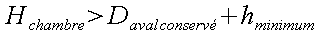
Avec : hminimum distance minimale entre la génératrice supérieure de la conduite de débit conservé et la génératrice inférieure de la conduite de décharge (définie dans les contraintes).
A partir de la hauteur Hchambre, du diamètre de la conduite de débit conservé et de la trajectoire de l’eau, Hydrouti propose une longueur de chambre minimale. Cette longueur est déterminée de telle façon à ce que le jet ne vienne pas percuter le mur.
Source : Wastewater hydraulics : theory and practice, Willy H. Hager
La largeur de l'ouverture du radier est fixée comme étant égale à la largeur du flot du débit de référence au droit de la chute. L’expression de cette hauteur est quasiment identique à celle obtenue dans le module chute à ß près :
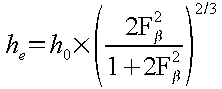
avec :
h0 : hauteur d'eau amont
F0 : nombre de Froud à l'amont 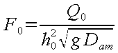
Fß : obtenu par 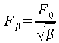
On peut remarquer que la chute n’est qu’un cas particulier pour le calcul de cette hauteur he, puisqu’on a alors ß=1, et on retrouve le résultat présenté dans le module chute.
L’expression du débit conservé est la suivante :
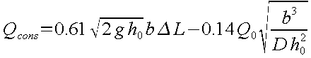
On constate que le débit conservé augmente linéairement avec la longueur de l’orifice et que c’est une fonction polynomiale de degré 1.5 de la largeur.
D’après Taubmann (1972), la largeur de l’orifice doit être égale à la largeur de l’écoulement amont, c’est à dire :
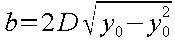
On peut alors en déduire une expression simplifiée de la longueur pour des taux de remplissage à l’amont (  ), compris entre 10% et 35% :
), compris entre 10% et 35% :
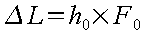
La longueur de l’orifice augmente linéairement avec la hauteur d’eau à l’amont h0 et le nombre de Froude F0.
On définit le coefficient M de la façon suivante :
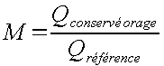
En introduisant l’expression du débit conservé énoncée dans le paragraphe précédent, on obtient l’équation suivante :
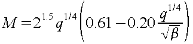
avec :
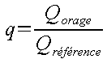
La fonction M(q) admet un maximum pour 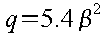 qui est égal à 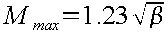 .
La limite inférieure pour ß qu’il est possible de considérer est ß=60% (ou même 50%), puisque dans ce cas Mmax=1.02 (respectivement Mmax=0.93). D’après l’ATV (Abwassertechnische Vereinigung), un leaping weir doit avoir un coefficient de précision de la séparation inférieur à 20%. Dans ce cas, la limite supérieure pour ß peut être 80%, puisque alors Mmax=1.18 .
Finalement avec un intervalle pour ß de [60% ; 80%] (ou même [50% ; 80%]), les conditions de précision dans la séparation sont toujours satisfaites.
L’équation suivante représente environ la trajectoire supérieure du jet dans un intervalle de [50% ; 80%] pour ß. Elle n’est valable que lorsque le débit dans la conduite aval de décharge est nul :
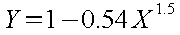
avec :
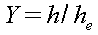 ordonnée adimensionnelle,
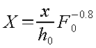 abscisse adimensionnelle.
En supposant qu’une partie de l’eau est déversée, l’équation permettant de trouver la hauteur hd à l’aval de la conduite de décharge est la suivante :
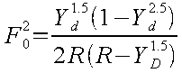
avec :
nombre de Froude à l’amont,
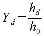
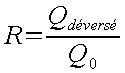
On constate que hd augmente naturellement avec R et F0.